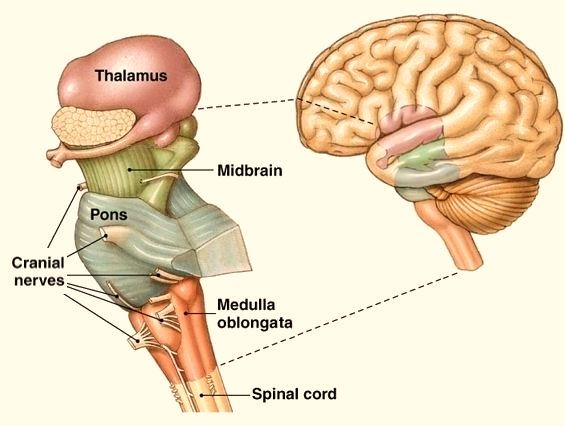
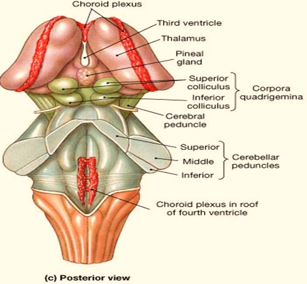

Srednji mozak
Srednji mozak se sastoji iz krovne pločice i pedunuculus cerebri, a između njih se nalazi Silvijev kanal ispunjen cerebrospinalnom tečnošću koji povezuje treću i četvrtu moždanu komoru. Na krovnoj pločici se nalaze dva para kvržica: gornje i donje.Gornje kvržice su zadužene za refleksne pokrete očiju, kao i koordinaciju pokreta očiju i glave. Iako se vizuelne informacije koje srednji mozak prima od očiju prenose preko talamusa do kore velikog mozga, gornje kvržice na određene vizuelne nadražaje mogu da reaguju bez učešća kore velikog mozga.
U donjim kvržicama se prvi put sastaju sve akustičke informacije, a zatim se prosleđuju kori velikog mozga na obradu. I one u nekim situacijama mogu samostalno da reaguju na neke zvučne nadražaje.

{kind=link}
Pedunuculus cerebri je deo tzv. sistema nagrađivanja. On je uključen u veoma važan način učenja koji nam pomaže da preživimo. Taj sistem se aktivira kada ispunjavamo određene funkcije koje su od vitalnog značaja (ako jedemo kada smo gladni ili pijemo kada smo žedni i sl.), a zauzvrat mozak nas nagrađuje prijatnim osećanjima koja nas uče da te aktivnosti treba da ponovimo. Neke droge, kao što je kokain, direktno aktiviraju ovaj sistem i na taj način pružaju zadovoljstvo i smatra se da je to razlog zbog kojeg se stvara zavisnost.

{kind=link}